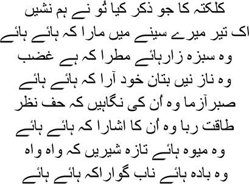

25
Weep for your dead desires
I had such high expectations from them
 t was spring when I reached Calcutta after passing through Murshidabad. My heart overflowed. Spring barely exists in Dilli, but Calcutta … Bengal … endless green everywhere. Had I not been to Bengal, I would never have known how nature plays with this one colour. An exquisite breeze blew there in spring; my friends used to say that the lure of romance was mingled in it. I felt it too. It was like muslin, and the lightest of its touches turned you wistful, as though an elusive lover were waiting somewhere for you. And then you would want to lose yourself in that spring breeze. ‘If only I could drift away on it,’ you’d tell yourself. I remembered Mir sahib’s sher:
t was spring when I reached Calcutta after passing through Murshidabad. My heart overflowed. Spring barely exists in Dilli, but Calcutta … Bengal … endless green everywhere. Had I not been to Bengal, I would never have known how nature plays with this one colour. An exquisite breeze blew there in spring; my friends used to say that the lure of romance was mingled in it. I felt it too. It was like muslin, and the lightest of its touches turned you wistful, as though an elusive lover were waiting somewhere for you. And then you would want to lose yourself in that spring breeze. ‘If only I could drift away on it,’ you’d tell yourself. I remembered Mir sahib’s sher:
Like the breeze, I seek you at dawn every day
In houses, doorways, lanes, all over the city
My friend Shohanlal arranged a room for me in Mirza Ali Saudagar’s haveli in Shimla bazaar, at a rent of ten rupees a month. Selling the horse I had travelled on, I hired a palanquin for getting about. I decided not to spend more than fifty rupees per month in any circumstance. Do you recognize the Mirza you knew, Manto bhai? I had realized on my way from Shahjahanabad to Calcutta that it would be impossible to survive without a series of compromises. And I would have to compromise anyway. After all, I had come to Calcutta with a mountain of debt on my head, in order to settle my pension. But I failed. I went back to Dilli as much a pauper as I had left it. I had been to Calcutta hoping for justice from the British, but I had to return with my forehead bruised from being dashed against brick walls. I don’t want to burden you with those details. The upshot was that I had to accept an unchanged pension of five thousand rupees a year.
But how can I forget what Calcutta did give me, my brothers. A city as lively as this in this world could only be a gift from the lord. A seat on the green grass of the maidan offered greater pleasure than the emperor’s throne could have. And oh, that breeze wafting in from the Ganga—where would I get the likes of it again? White women rode on the maidan every morning and evening, the Arab steeds as sturdy as the beautiful ladies on their backs. A new painting seemed to be born every minute against the backdrop of the green grass. The ladies’ postures changed with the speed of the horses, each pose an arrow piercing the heart. The governor’s residence was equally formidable, and how much I coveted the houses set amidst gardens in the Chowringhee area. Each of those houses belonged to an Englishman. Believe me, Manto bhai, if it hadn’t been for the responsibility of looking after my family, I would have stayed on in this city till the time I would be despatched to my grave. Shahjahanabad did not have air and water so pure. Heaven, it was absolute heaven.

The moment you mentioned Calcutta, my friend
My heart bled, pierced by an arrow
The wondrous spread of green
The beauty of the women
The glances, the gestures
Weakened even the strongest of hearts
Blessed is its fruit, sweet and fresh
Memorable is its full-bodied wine
I had never tasted wine as fine as the one in Calcutta. Nor mangoes. I fell in love with mangoes immediately upon my arrival in Calcutta. I had tasted the fruit before, but Bengal’s mango was like the lover’s kiss after a prolonged wait. My tongue would drip at the very sight of the fruit. My eyes closed in joy as I put a piece in my mouth. Even if every fruit in heaven were laid out before you, Manto bhai, you would never forget the Calcutta mango. I was such a glutton that I even wrote to the Mutawalli at the Imambara in Hooghly to send me some mangoes. I want the kind of fruit, Mutawalli sahib, that not only looks beautiful when used to adorn the dining table, but also pleases the heart. As you know, only the mango can boast of this quality. And Hooghly’s mangoes in particular are peerless, like flowers freshly plucked from the garden. If you deign to think of me once or twice before the mango season ends, I shall be grateful. Mutawalli sahib responded to my plea. My servants would soak the mangoes in water; I would have a mango every morning, and then again in the afternoon. Do you know what chilled mango tastes like, Manto bhai? As though you’re running your tongue over the body of your favourite woman.
Since the subject of mangoes has come up, let me tell you a story or two, my brothers. They’re not really stories—but then my life is nothing but a story now. Rajiduddin Khan, a doctor from Shahjahanabad, was a great friend of mine. He abhorred mangoes. We were sitting in the balcony of my house one day when a man passed along the lane with an ass. The ground was littered with mango peel, which the ass sniffed but didn’t eat. The doctor chortled, saying, ‘Look, Mirza, even an ass won’t touch the mangos you love so much.’
All I said was, ‘That is true. An ass cannot savour the taste of mangoes, doctor.’
The doctor laughed initially, but began to look grim suddenly. ‘Meaning?’ he asked.
Laughing, I said, ‘No ass has ever enjoyed a mango.’
‘I see,’ he said, and left.
Where mangoes are concerned, Manto bhai, only two things are important. They must be very sweet, and there must be a sufficient quantity for me to carry on eating as long as I want to. Calcutta ensured both. I didn’t just eat the mangoes, sometimes I would simply run my fingers over the fruit soaked in water. What a joy it was! Such a pleasure for the eyes too. Consider the Himsagar—the light orange hue of the sunrise is gathered in its body. Or take the Langda—green all over, with streaks of pale yellow. The Gulabkhas is a striking red in part, the rest being green or yellow. No other fruit can boast of such a play of colours, Manto bhai. You can never say enough about the beautiful mango. I was so besotted with them that friends and associates from near and far used to send me different varieties of mango. ‘Considering how much you love mangoes,’ Begum told me once, ‘why don’t you give up drinking?’
— You know I have a life outside the house, Begum. But have I left you? I want both.
— And what about what I want?
— You want me to become the perfect husband. Not in this lifetime, Begum. But I cannot leave you either. Or else I would have divorced you long ago.
— Why can’t you, Mirza sahib?
— You’re the one sanctuary in a life gone astray.
— Really?
— Why do you think I return to this house after all’s said and done? Even if we don’t talk all day, why do I feel I still have a home?
I didn’t tell Begum any of this, Manto bhai. All of this is a dream—things I said in my dreams. I only talked to Umrao Begum in my dreams. She must have talked to me the same way. How else could we have spent all those years together? There must have been some soul somewhere, which neither of us recognized.
Soul! Such an elusive word. It wasn’t until I went to Calcutta that I learnt it. Nawab Sirajuddin Ahmed, my friend in Calcutta, said to me one day, ‘Come with me, Mirza, today I shall take you to someone who will fill your heart with delight.’
— Who?
— Nidhu-babu.
— Where is this babu from?
— Oh no, he isn’t a babu. But everyone calls him Nidhubabu. His real name is Ramnidhi Gupta. He composes songs, and sings them too, though he cannot sing anymore now.
— Then why should we go?
— You’ll enjoy talking to him, Mirza.
It was a small room in a two-storeyed house in a lane that remained dark even in daylight. We arrived in the late afternoon. He was still asleep. When his servant awoke him, he sat up, stretching, and asked Sirajuddin sahib, ‘Why at this odd hour, nawab sahib?’
— I have brought a friend of mine.
— A musician?
— A poet. From Dilli.
Greeting me, he said, ‘The nawab sahib has brought you here. I’m nearly ninety now. Your servant has no means to entertain you. I cannot sing anymore.’
— You could give us a song or two if you like. Sirajuddin sahib spoke.
— I do wish I could. But my voice does not come alive anymore, nawab sahib, how can you sing when there is no life in the singing? You know that.
— Heaven will materialize on earth if you sing.
— It isn’t possible, nawab sahib. Both of us know that. Why are you lying? The notes come from the navel—the melody comes from the notes—how will there be melody when the navel is shrivelled? You know very well that fooling people by croaking like a crow is not my calling. Please sit down, gentlemen, don’t keep standing.
There were no sitting arrangements in the room; we took our seats on Nidhu babu’s bed. ‘Are you in Calcutta on work?’ he asked.
I explained everything to him. After a few moments’ silence, he said, ‘These bastards have come here to suck this country dry. They will do nothing for you and me. You’ve never heard Sadhak Ramprasad sing. Do you remember him, nawab sahib?’
I came full of hope, but all in vain
Like the bee deceived by the flower in the picture
You said you’d play, but you threw me back to earth
Your games this time have dashed my hopes
Like the Englishman, this city has no heart either, Mirza sahib. You won’t get anything here. Go back to Dilli. We have a new breed of gentlemen in this town now, who claim that all of Nidhu-babu’s songs are obscene. You shit-eaters, will the English now decide what is decent and what is not? Where will you make room for Bharatchandra then? Will you wipe Vidyasagar off altogether? That bloody foreigner—that damned Derozio—is teaching people to drink and eat meat and claim that an English education is the best education. Do you think we drank any less or ate any less meat than you? We had our kept women too. Doesn’t mean we became dissolute rakes. Listen to this song:
You never understood my desire, my soul
The regret kills me, but you don’t know
Let the lotus claim the heart, I don’t care
What value in a soul that dies of only virtue?
Tell me, is this song of Nidhu-babu’s obscene?
He sang a succession of tappas for us. And each of them included the word ‘soul’. He seemed to be offering us a fully-bloomed flower with every utterance. Exhausted with this singing, he sat in silence for a long time.
‘How fortunate I am!’ declared Sirajuddin sahib. ‘I have heard you sing again after such a long time.’
Turning to me, Nidhu-babu said, ‘Go back, mian, go back to Dilli. Calcutta will offer you nothing at all. All you’ll get is humiliation. The blind have the best eyesight today. People here care for nothing but scandal. Mahananda Rai Bahadur, the maharaja of Murshidabad, used to spend a few days in Calcutta from time to time. He had a fixed whore named Srimati. I used to sing for his pleasure every evening. I cannot tell why, but Srimati was fond of me too; she would ensure I was looked after while I was there. People began to whisper that she was my whore. I may have composed many of my songs with her in mind, but did that make her my whore? This is how Calcutta interprets things. The longer you stay here, the more you’ll come to understand. Talent has no value here, what you need is the gift of the gab. All this is the result of Western education, Mirza, they do not think of anyone beside themselves as human beings.’
When we were leaving, Nidhu-babu put his hand on my shoulder and said, ‘Don’t despair, mian sahib, you have a long road ahead of you. I am done, which is why I was babbling.’
Since I’ve mentioned Nidhu-babu, I must mention another poet too. The poet Ramprasad Sen had died long before Nidhubabu. He was a devotee and a poet, Manto bhai. It was said that the goddess Kali had appeared in the guise of his daughter and joined in the work of mending the fence around his house. There were many other stories about him. Devi Annapurna from Kashi had come to listen to him sing. He used to write his songs in the ledger of the office where he worked. One of his tunes, in Pilu Bahar, buzzed around my mind like a bee for many years; but it too was lost. All colour, all melody bid farewell to me gradually.
What Nidhu-babu had said made me see a different Calcutta through his eyes. And this same Calcutta—which did not know how to honour its noblest—soon sucked me into its quagmire. A big mushaira used to be held on the first Sunday of every month. Even Dilli did not have mushairas as large as this one. Nearly five thousand people would gather. After my ghazals, a group of people questioned the language and style of my work, citing Qateel. No matter what people say, I never considered Qateel one of the great Persian poets. How could I? He was actually Dilwali Singh, a Khatri from Faridabad who converted to Islam later. Yes, I can accept it if you talk of Amir Khusrau. When I said as much at the mushaira, people started shouting. I remembered what Nidhu-babu had told me. I went home without prolonging the argument. But my silence didn’t matter. Why should Qateel’s followers spare me? They began to harass me. I thought it over and decided that I was in Calcutta to settle my pension; there was nothing to be gained by antagonizing people, for there was no telling who could prove useful. I wrote a poem in Baad-e-Mukhalif, seeking forgiveness. But I did not abandon my stance, Manto bhai. People were astonished. ‘What have you done, Mirza sahib?’ asked Raja Shohanlal.
— What do you mean?
— Why did you have to demean yourself this way?
— Don’t you know that even the ant kicks the elephant when it falls into a pit? The elephant has to plead with the ant for rescue.
— But still, you …
— I’m no one. You could say I’m an eternal slumber.
— Meaning?
As if I knew the damned meaning. I just said things that popped into my head. If I could have thought things out carefully before speaking, life would have become a bed of velvet, Manto bhai. But I didn’t want that either. I went back to Dilli from Calcutta filled with despair, but I couldn’t forget Calcutta. Many small incidents come to mind, you know. I met many senior English officers in pursuit of my case; I don’t remember them anymore. But there was a fishwife whom I cannot forget. I used to visit Shimla bazaar every day with a servant in tow to buy fish and vegetables and fruits. I became friendly with a fishwife in this market. She used to get topshe for me regularly—what the English referred to as ‘mango fish’. Small fish, orange in colour. It was a delicacy when fried. Especially with a drink. After a brief exchange of pleasantries, this fishwife used to tell me a new story every day. If someone came up to buy fish during this time, she would snarl, ‘Get out, can’t you see I’m having a heart-to-heart with mian?’
‘Heart-to-heart?’ the customer would ask. ‘So you won’t sell fish now?’
— No I won’t. It’s my fish, none of your business whether I sell it or not. Turning to me, she would say, ‘Now listen, mian, you’ll die laughing when you hear what Bhattacharya the Brahmin said.’
The lure of the story would make me sit down by her side.
— All that these Brahmin Bhattacharyas did was to pore over their textbooks and stare at the sky, rapt in thought. Nothing in the world caught their eye. One of these Brahmin’s wives was making dal in the kitchen. Suddenly she ran out of water. Leaving her husband to watch over the dal, she went out to fetch some water. While she was gone, the dal began to boil over. This was a crisis. Do you know what he did eventually? Winding his sacred thread around his hand, he held it out over the dal and began to read the scriptures. Have you ever heard of such a thing, mian? Imagine reading the scriptures to stop the dal from boiling over!
— And then?
— When his wife returned and saw what had happened, she said, ‘What! Couldn’t you have put in a little oil?’ As soon as she poured oil into the pan, the boiling dal subsided. Do you know what Bhattacharya did then, mian?
— What did he do?
The fishwife rolled against me with laughter. She was shameless. Running her hand through my beard, she said, ‘The Brahmin put his head on his wife’s feet, saying, who are you, Goddess? Even I admitted defeat, but you conquered all simply by sprinkling a drop of oil.’
— And then?
— What do you think? ‘What nonsense!’ shrieked his wife and left. The fishwife asked, laughing, ‘Can a man ever compete with a woman, mian?’
If it’s masculinity you want to talk about, Manto bhai, there’s only one man I can think of, and that’s Rammohan Roy. I never saw him myself. But I heard about him everywhere in Calcutta. Apparently courtesans used to dance at the feasts he hosted at home. There were many famous courtesans in Calcutta at the time—Begumjaan, Hingul, Nannijaan, Supanjaan, Zeenat, Syed Buksh. No, my brothers, I didn’t see any of them. They were contracted to the rich gentlemen of Calcutta. I had no connection with these babus. I was told that babu Rammohan used to publish a Farsi newspaper named Meerat-ul-Akhbar. But it had closed down before I reached Calcutta. However, another Farsi newspaper named Jamijahanuma was still being published. Not to mention several other newspapers in English and Bengali. Calcutta got me addicted to reading the newspaper. There were no newspapers in Dilli yet. How could there be? Newspapers needed printing presses, after all. And Calcutta had so many such presses. Sirajuddin sahib showed me a book. Bharatchandra’s Annadamangal, which, he said, was printed by someone named Gangakishore Bhattacharya. I also heard of someone named Panchanan Karmakar. He was the first to create a Bengali typeface for printing.
I was talking of Rammohan Roy, wasn’t I, Manto bhai? I never saw him with my own eyes, though I heard many canards about him. But when I heard about his fight against the Sati system, none of those other things mattered anymore. I saw an act of Sati being committed at the Nimtala cremation ground. And I saw people on their way to death. Dying people would be carried to the bank of the Ganges and put in a room there; every day, when the tide rose, his family would submerge him partly in the water. It was called the antaryali yatra, Manto bhai, dying in the holy water of the Ganges. They would die after days and weeks of suffering under the sun and in the rain and the cold. After minimal rites, their bodies would be floated out on the currents. During the Sati ceremony, the pyre would be made with sandalwood and the flames lit with ghee; the wife would be burnt to death along with her husband’s body. Incantations would be chanted, bells would be rung, drums would be beaten—it was like a celebration. No one could hear the painful sounds of a woman being burnt alive. When I saw this scene for the first time, Nidhu-babu’s songs kept reverberating in my breast—soul. I learnt afterwards that Rammohan’s efforts did lead to the end of this practice.
I abandoned all my hopes when I left Calcutta. I went away only with memories such as these. Yes, Manto bhai, a wondrous spring breeze may indeed blow there, but I had to return from the same city with my forehead bloodied from banging against walls. When I returned to Dilli, it was with a debt burden of some forty thousand rupees.